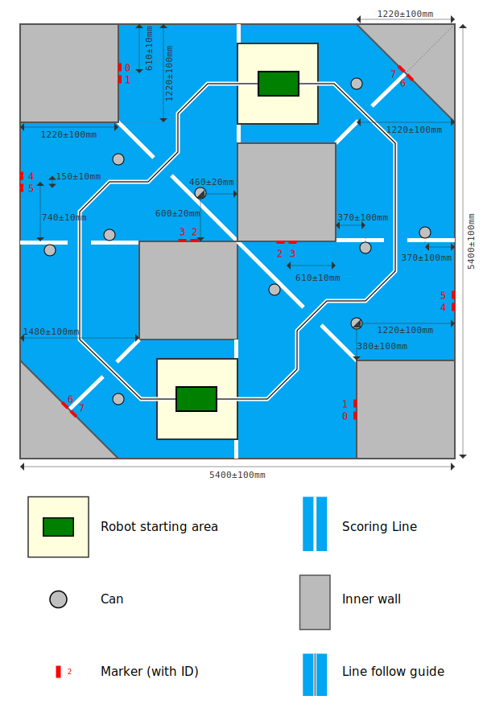

Scoring Rules
-
The objective of the game, called Tin Can Rally, is to race around a track, avoiding tin cans along the way.
-
The game is played between two robots.
-
Each match lasts for 150 seconds.
-
Robots will be started at the direction of match officials.
-
Game points are awarded as follows:
-
2 points are awarded each time a robot crosses a scoring line in the anti-clockwise direction.
-
A robot is deemed to have passed a scoring line when the entire robot has passed the line.
-
If a robot passes backwards (i.e: clockwise) over any scoring line it must "undo" these before any further forwards line crossings will be counted.
-
If a robot knocks over a can, it loses 1 point.
-
If a robot has fewer than 0 points at the end of a match, it will be awarded 0 points.
-
At the end of the match the robot with the most points wins.
-
SRO reserves the right to have match officials in the arena during matches.
-
The judge's decision is final.
-
Teams may not interact with their robot after the start of a match. This includes to restart their robot should it fail to start. Doing so may result in disqualification from the match.
-
While accidental bumps and scrapes are inevitable, the sport is non-contact.
-
Robots must not deliberately or negligently damage the arena or anything in it.
-
A robot will be stopped during a match when it is at risk of severely damaging itself, other robots, the arena, or otherwise poses a safety risk.
Robot Design Rules
To ensure a fair competition, all teams must adhere to the following regulations.
Violations of these rules, without an exemption, may result in penalties.
These may include deductions of points or outright disqualification.
-
All robots must be safe.
-
Teams must conduct themselves within the principles of good sporting conduct.
-
Robots must fit within a 500 mm × 500 mm × 500 mm cube at all times.
-
Robots must have a spare USB slot accessible to match officials.
-
Robots must have a flag mounting that conforms to the flag mount requirements.
-
Robots must not use any remote control systems, radio transmitters or receivers.
-
Robots must not have any fiducial markers visible to other robots that may confuse other robots.
If you have questions or concerns about the rules and regulations, including applying for an exemption, please ask.
Flag Mounts
A “robot flag” is a removable identifier that will be attached to a robot throughout the match.
It features the zone colour to allow spectators to easily associate a robot with its zone.
Robot flags will be provided by SRO.
The flag assembly is shown below.
The pole is constructed from 15 mm white PVC piping.
This is what will attach to your flag mount.
To allow flags to be easily used with your robot, your flag mount must conform to the following requirements:
-
The flag mount must be securely affixed to the main chassis of the robot, and hold the flag vertical when the robot is in its typical stopped position.
-
Flags are not counted when considering the size of the robot.
-
The identifying part of the robot flag must be visible when attached to the mount.
Safety Regulations
To confirm that your robot is safe, a safety inspection will be carried out by SRO prior to the start of the competition event.
Robots must pass a safety inspection before they can enter a physical arena.
In order to pass safety inspection, robots must:
-
Have a mass of less than 13 kg. Generally, teams should aim for their robot to be below 10 kg.
-
Have all electronics securely mounted with removable fastenings. Cable ties and screws are recommended for this. Please do not affix anything to the boards with glue or double-sided tape. Electronics should be mounted such that they are not easily damaged.
-
Have all wiring tidy and securely mounted. Wiring must not be at risk of being snagged by mechanisms or other robots. Wires should be mounted with removable fastening to aid development.
-
Provide adequate protection to the batteries they use, including protection from mechanical damage. A hard case that secures the battery is recommended for this.
-
Only batteries provided or authorised by SRO may be used.
-
The robot may only be powered through the SRO power board.
-
Only chargers provided or authorised by SRO may be used to charge the provided batteries.
-
Have a power switch, which will completely immobilise the robot. It must be accessible and obvious, without disassembling the robot in any way. It should be on the top of the robot.
-
Not have any sharp edges or points.
-
Not contain any power system that exceeds 50 V.
If you have questions or concerns about the rules and regulations, including applying for an exemption, please ask.
Specifications
Markers
The arena is labelled with fiducial markers. Each marker pattern encodes a number. Each marker number is associated with a particular feature within the arena, and also has an associated size.
| Item |
Marker Numbers |
Marker Size (mm) |
| Arena boundary |
0 - 7 |
100 |
Sixteen arena wall markers are positioned around the arena as shown in the arena specification. Marker codes are repeated on each side of the arena.
Wall markers are placed such that the bottom of the marker is 20±5mm from the arena floor.
Arena

-
The above figure represents, to scale, a birds eye view of the arena. The arena is a square with side length 5400mm.
-
The floor of the arena is covered with a closed-loop, short pile carpet.
-
The perimeter of the arena floor is delimited by the arena wall, which has a minimum height of 250mm.
-
The inner walls of the arena have a minimum height of 170mm.
-
Scoring lines are marked using tape with width 50±5mm.
-
Starting areas are 1000±50mm squares and will be marked by tape which is considered part of the starting area. Robots may start anywhere inside their starting area facing any direction.
-
SRO reserves the right to have match officials in the arena during games.
Line follow guide
-
The line follow guide is marked with tape on the arena floor.
-
The guide is marked using black tape with width 12±1mm. The black tape is positioned centrally on a piece of white tape with width 50±5mm.
-
Where the line follow guide passes another taped line, the guide and surrounding contrast will always be on top.
Competition Structure
The competition is structured in two phases:
the main league
and the knockout.
Matches
-
At the end of a game, league points will be awarded as follows:
- The team with the most game points will be awarded 4 points towards the competition league.
- The team with the second most will be awarded 2.
- Teams whose robot was not entered into the round, or who were disqualified from the round, will be awarded no points.
-
If a match ends in a tie, both robots will be awarded 3 points.
-
At the end of the leagues, positions in the leagues are used to seed a
knockout. The knockouts will be used to determine the final 1st,
2nd and 3rd awards.
-
In the event of a tie in a knockout match, the team that ranked highest in the league will
go through. In the event of a tie in league points, the team which has the most game points in the league will go through.
Additional points
-
An additional 4 league points are awarded for each team who completes the entire Electronics Lab before the end of Wednesday.
-
An additional 4 league points are awarded for each team who completes the entire Robotics Lab before the end of Wednesday.
-
At the end of the Lightning Talks, league points will be awarded as follows:
-
4 points for the highest scoring team.
-
2 points for the second highest scoring team.
-
1 point for the third highest scoring team.